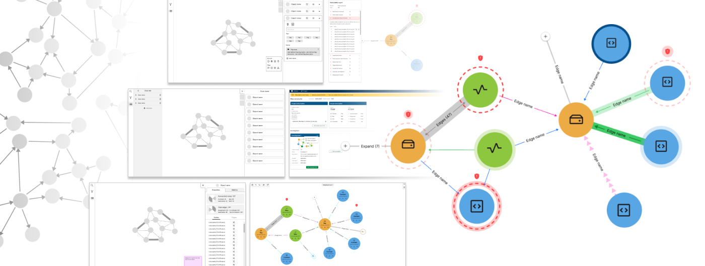

A data visualization application
Contents: Problem ▾Process ▾Solution ▾
Overview
The Project
This project is under an NDA. Certain details present in the original mockups and design process have been changed or removed.
Very complex data sets can be difficult to navigate in an intuitive way, and so for this project an Amida team of engineers, mathematicians, developers, and designers sought to try and solve this problem by using graph theory principals and a node-and-edge visual representation of data. Applying proprietary heuristics metrics to the visualized data, the application would allow users to see errors represented visually, in a much more intuitive way than looking through the data itself, and thus assist engineers with their effort to fix the errors they otherwise may have missed.
Role & skills
As the principal designer (one of two), I was responsible for the majority of research and discovery, mockups, high fidelity interactive prototypes, and some marketing materials. The second designer was brought on after the MVP prototype was complete.
| Competitive analysis | SME interviews | Low-fidelity wireframes | Persona creation |
| Design system creation | High-fidelity mockups | Interactive prototypes | Graphic design & illustration |
Impact
I delivered developer-ready mockups, interactive prototypes, product demos, marketing illustrations and animations. The interactive prototypes and marketing materials were part of the information pitched to several industry leading potential customers, which led to additional business development opportunities for Amida.
The problem
Background
The team determined that a node-and-edge graph was the best way to represent our data sets. In this form of data visualization, nodes represent data points, and edges represent the relationship between data points. The team needed an application front-end that allowed users to explore the graph itself, view its information, and utilize a suite of additional tools and features.
Design challenges
Node-and-edge graphs are common ways of representing relationships between data, but the larger they grow, the less intuitive or readable they become. In our team's case, we needed to find a way to navigate and makes of sense of very large data sets, resulting in potentially extremely large numbers of nodes and edges in their graphical representation. The main design challenges associated with this project fell into two categories:
- How could users interact with the information dense and visually complex graph?
- How could I incorporate the additional tools and features that needed to be able to dynamically affect an already complex visualization?
The process
Persona creation
In this case, the SMEs I needed to speak with were already on the team: my team was comprised of engineers who were representative of our end users, in terms of the expertise needed to make sense of the data this application was designed for. As a designer I was in a good position in terms of my ability to quickly learn about our users' needs and pain points.
Competitive analysis
Prior to beginning development on our custom application, the team was already using an existing third party data visualization tool for concepting purposes. Starting with this tool, I conducted a competitive analysis of other existing data visualization applications to get an idea of how they handled large data sets, and UI solutions for graph interaction and customization.
Though they were helpful for an introduction to some common UI patterns, despite the large number of existing data visualization applications, none of them were able to provide the depth of visual interaction our use case required, and not all of them were complete front-end solutions, which further necessitated building our own custom tool.
Below is an example of a Cosmograph visualization with about 26,000 nodes. For our custom application, we needed to represent at least 50,000, though they did not always need to be visible at once.
Defining the scope
With a team full of SMEs, it quickly became apparent that they all had good ideas about what features to include based on their needs, and we began to see the potential for rapid scope creep almost immediately. To try and prevent this, I limited the team to determining the MVP features for each of the three main modes of interacting with the application. The main features of the site could be organized under a few different categories:
- A dashboard for setting up projects and viewing statistics
- The UI features that augment the data visualization
- The interactive graph data visualiztaion itself
With these categories in mind, I began my ideation process with the specific features suggested by the team.
The dashboard
The dashboard is where users would import data sets before entering the interactive graph visualization itself. Its main features included:
- Giving users an overview of imported data sets
- Creating distinct graph "views" for each data set
- Choosing what heuristics to apply to each "view"
- Tracking changes in the graph data over time
View this full size ▸
or scroll through the iframe below.
An early low fidelity prototype of the dashboard, used for basic usability testing with the team:
Mid fidelity mockup of the dashboard features:
Graph UI
On top of the nodes and edges of the data visualization, are the UI tools and features that help users make sense of, and keep track of the information associated with, the graph. The main features included:
- Saving graph objects to lists
- View detailed object information
- Apply a heatmap to the graph
- Search the graph
- Dynamic filters that affect graph behavior and appearance
- Results from heuristics analyses
Early low fidelity prototype of the graph UI:
Mid fidelity mockup of the graph UI:
Data visualization
The data visualization itself includes all the nodes, edges, and other graphical elements the user can interact with in dynamic ways. One of the key distinctions between our application and other existing data visualization solutions, was the density of information we needed to represent. Bearing this in mind, the main features of graph interaction included:
- Progressive reveal of information density based on object interaction
- Zoom, pan, and otherwise manually navigate around the graph
- Mark and highlight graph nodes
- Expand node "neighborboods"
An early prototype of zooming, panning, and expanding groups of graph elements:
A example of graph markers "clustering" when the user zooms and and out:
An early idea for pinning graph objects allowed users to retain a visual indication of the location of objects of interest. This was removed in later iterations:
Testing and iteration
Usability testing was limited to the internal development team itself, but this allowed for quick iteration on our initial ideas. SOme examples of early changes based on team testing and discussion were: